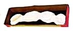
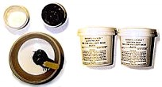
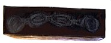
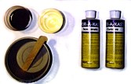
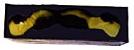

To keep things simple I'm going to use a very simple base for the master part. This means that we can make a one part mold. Remember this article is for beginners!
The base that we will use was made for Horizons Dr. Doom. He can't stand by himself because he isn't properly balanced. Horizon includes a thin black rectangle of plastic for a base, not very inspiring. This new base is just a set of four large stone blocks like you might find making up the floor in a castle where Dr. Doom hangs out. It was sculpted out of Sculpey and then baked in the oven to harden. Scupley is weak and the surface is still fairly soft even when hardened, so I wanted to cast the part to have a solid base for Dr. Doom. Hey, he deserves the best!
Before you start on a project like this one you need to make sure you have all of the materials that you will need. Here is what I used for this project: cardboard, tape, scissors, two plastic tubs, two craft sticks, Experts Choice two part mold material, and Synair two part resin. That's it!
The sequence of steps to mold and cast a part is pretty simple:
 For this project I decided to make the mold box using
cardboard and tape.
It's cheap, easy to work with,
and does the job. When laying out the box, make sure
you leave enough room around the part so that the mold
will be thick enough to keep its shape.
You can simply create a rectangular box that will hold
your part.
For this project I decided to make the mold box using
cardboard and tape.
It's cheap, easy to work with,
and does the job. When laying out the box, make sure
you leave enough room around the part so that the mold
will be thick enough to keep its shape.
You can simply create a rectangular box that will hold
your part.
If your part is large and irregularly shaped then you may want to add some filler to take up some of the unused space. It's worth the effort to add the filler because the mold material is fairly expensive. Danny Soracco has a good tip: recycle old molds by cutting them up into parts and using them for filler.

When your box is built you can set your part in it
and move on to mixing and pouring the mold material.
Since we are using a base, we want to make sure that
the box is on a level surface so that the mold will
be level when it is done and we can easily pour the
casting material into it without having to worry
about leveling the mold.
Mix and Pour the Mold Material
There are some really quick hardening mold materials
available. These are great if you are making casts
in the middle of a project or only want to cast a
couple of parts. For a final part where you want
to make a lot of casts you would use a different
type of mold material.
 I used Experts Choice Quick N Easy A&B Low Viscosity Mold Putty in this case. It cures in 20 minutes, is good for a small number of casts, and doesn't require the use of any release agents. It is very easy to use, simply mix equal amounts of part A (black) and part B (white) in one of the plastic tubs. Stir slowly so that you don't introduce air bubbles. When the mixture turns a uniform gray you are ready to pour.
 Pour the mixture slowly and let it run into all of
the cracks. It's kind of like pouring syrup on pancakes.
Take your time and let it spread all over so that air
won't get trapped anywhere. Then you just need to wait
20 minutes until the material has hardened.
Pour the mixture slowly and let it run into all of
the cracks. It's kind of like pouring syrup on pancakes.
Take your time and let it spread all over so that air
won't get trapped anywhere. Then you just need to wait
20 minutes until the material has hardened.
Pull the Master

Since we are molding a base we end up with a
one part mold that is really easy to use. Cut the
tape around the edges of the box with an X-acto knife
and then peel away the bottom and sides. Now you
should be able to see the bottom of the part. Bend
the outer parts of the mold away from the part to
loosen them up. Then just bend back one side of
the mold and start to work the part out of the mold.
Don't bend the mold too far or the mold material may
crack. Next I trimmed away some of the flash around
the top of the mold (which is the bottom of the base).
Now I was ready to cast some new parts!
Mix and Pour the Casting Material

I used
Synair Por-A-Kast
resin to cast my bases.
This is a two part resin consiting of Curative (clear) and Isocyanate (brown).
When the two parts are mixed a chemical reaction takes
place that heats the resin and causes it to cure. Thicker
areas in your cast will cure more quickly because they have
more material and thus generate more heat. Thin parts will
cure less quickly.
 Por-A-Kast is easy to use, just mix equal amounts of Curative and Isocyanate. Stir slowly for 30 seconds so that you don't introduce any air bubbles. Now slowly pour the mixture into the mold. Again, take your time and let it spread all over so that air will not get trapped anywhere. But don't take too long because you only have a couple of minutes before the mixture will begin to thicken. Then step back and watch it "kick"! It should get cloudy then turn white. It gets pretty hot when it kicks, so be careful.
If you will be pouring more than one cast you might
want to use two measuring cups: one for part A and one
for part B. Then pour both parts into the plastic tub
to mix them. Since you never mix the two parts in the
measuring cups you can reuse the measuring cups over and
over without having to clean them.
Pull the Cast
 In a matter of minutes the part should be hard enough and
cool enough to pull from the mold. To pull the cast
follow the same method as used to remove the part.
First loosen up the cast by pulling back each edge
of the mold. Then bend back one side of the mold
and work the part out of the mold.
In a matter of minutes the part should be hard enough and
cool enough to pull from the mold. To pull the cast
follow the same method as used to remove the part.
First loosen up the cast by pulling back each edge
of the mold. Then bend back one side of the mold
and work the part out of the mold.
The first problem was I didn't have enough mold mixture to cover my part and fill my mold box! So I had to quickly grab some filler and try to stick it in the big gaps. Next time I'll make sure to do a better job estimating the amount that will be needed. I'll also make sure I have some filler on hand before mixing and pouring.
The second problem was when I went to cast the first part I noticed that the mold wasn't level! So I had to take a minute to find something to stick under one part of the mold to level it out. Then I poured in the rest of the resin. At this point the resin was already starting to thicken. This resulted in some air bubbles just below the surface near the top of the mold. On the second cast I made sure that the mold was level before I mixed the resin and the part came out perfect!
The Experts-Choice Mold Putty label warns:
And the Por-A-Kast label warns:

The Gremlins in the Garage webzine is a production of Firefly Design. If you have any questions or comments please get in touch.
Copyright © 1994-1997 Firefly Design.